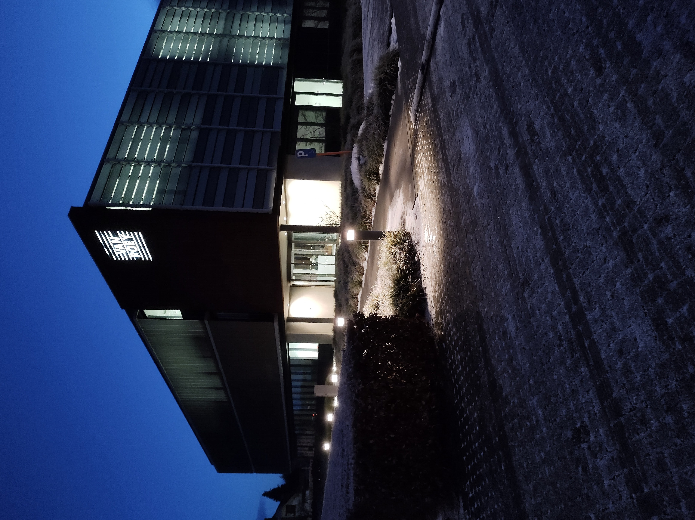

Vandaag begon ik de dag met de jobs van werknemers aan te passen in een databank want bij het nieuwe jaar kregen heel wat mensen een nieuwe job. Ik moest dan de nieuwe jobs van een Excel document controleren of de jobs veranderd waren of niet en als die veranderd waren moest ik die aanpassen in de databank. Daarna begon ik met 2 nieuwe laptops in te stellen maar het opstarten duurde heel lang dus het was al snel middagpauze.
Na de middag had ik nog even gewacht maar het duurde veel te lang dus ik had de laptops opnieuw opgestart en dan lukte het wel. Nadien had ik met Paul wat legen dozen in de container gegooid want er stond veel op de bureau. Als laatste had ik wat opgezocht om een HEIC bestand te converteren naar een jpg bestand op Windows maar ik vond niets dat gratis was. Vandaag was er niet zo veel te doen dus het was al tijd om naar huis te gaan.
